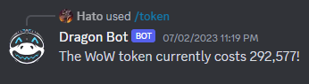

Dragon Bot
Dragon Bot is written in Python using the discord.py library, which integrates smoothly with the Discord API. Dragon Bot can perform a wide variety of tasks:

API calls: The bot can return data from the Battle.net API, including the value of in-game currency and specified images of in-game elements.
Image processing: In order to display the images in a clean fashion, Dragon Bot crops, saves, and re-uploads the aforementioned images before displaying them to Discord.
Time-based reminders: Dragon Bot features a /remind command, which takes the user’s input and desired reminder time in minutes. After the specified time has passed, the bot will notify the user of their reminder.
Information and contextual commands: The bot will respond with information or phrases based on user messages in the chat. For example, a user that asks for an Administrator will be directed to the correct contact channels.
This bot is a personal project for learning purposes. Feedback and suggestions are welcome. You can view the entire code here:
Dragon Bot on Github